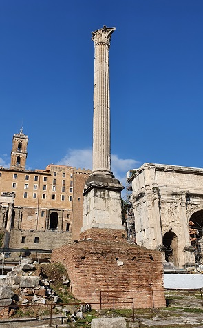
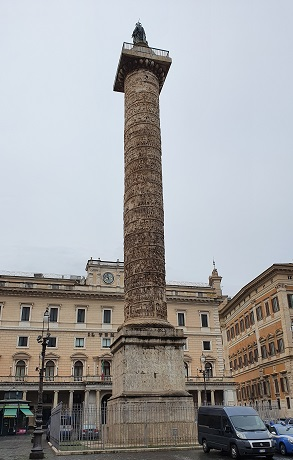
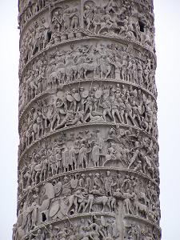
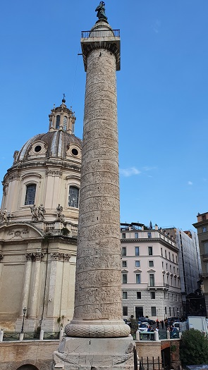

|
Columna de Focas
Fue erigida por
el emperador de Bizancio Focas, el 1 de agosto de 608 delante de los Rostra en
el Foro, último monumento que se levantó en el Foro Romano. Columna corintia de
13,6 m datada en siglo II. Debajo de esta zona se hallan las galerías
subterráneas de época de Cesar, que servían para organizar los combates de
gladiadores que se celebraron aquí hasta época de Augusto.

|
Columna de Marco
Aurelio
 |
Fue erigida
entre 180 y 192. Inspirada en la Columna Trajana, se conmemoran las victorias de
la Guerra Germánica (171-172) y de la Sarmántica (173-175).
En esta columna
las figuras de los bajorrelieves son más alargados y abultados. Mide 42m de
altura, y está compuesta por 27 tambores de mármol superpuestos.
La base se
encontraba en su origen cuatro metros por debajo del nivel del suelo.
En la misma zona
se alzaban dos templos, la columna de Antonino Pio, un crematorio, y el reloj
solar, posiblemente más grande jamás construido, tan grande como la Piazza del
Popolo, hoy sepultado bajo los edificios de la zona. También se conoce como
columna Antonina.
 |
Columna de Trajano
|
 |
La columna fue
erigida el año 113. Es de orden dórico, tiene una altura de unos 40m, contiene
17 tambores, de 1.5 metros de alto por 3.5 de diámetro y una escalera interior
en espiral de 185 peldaños. Realizado en mármol blanco de Carrara.
Está circundada por 200 metros de bajorrelieves en los que se relatan las
victorias del emperador hasta lograr la colonización de la Dacia. Estaba
coronada por una estatua de Trajano, actualmente de San Pedro.
Es el único monumento que permanece intacto de los elementos que conformaron el
conjunto del foro de Trajano. El grandioso fuste está erigido sobre un pedestal
cúbico que contenía el sepulcro del emperador, y en su superficie se describen a
modo de epitafio, las expediciones militares de Trajano; siempre está presente
en todos los bajorrelieves, aparece en más de 60 ocasiones.
El realismo es la característica de este monumento, sus relieves se consideran
como los mejores ejemplares del relieve romano de carácter histórico.
|
 |
Las 26.000 imágenes estaban
pintadas con colores brillantes para que fueran bien visibles desde el techo de
las bibliotecas, situado a media altura de la columna. La columna indica la
altura de la colina Quirinal que se destruyó para construir el complejo de
Trajano.
|